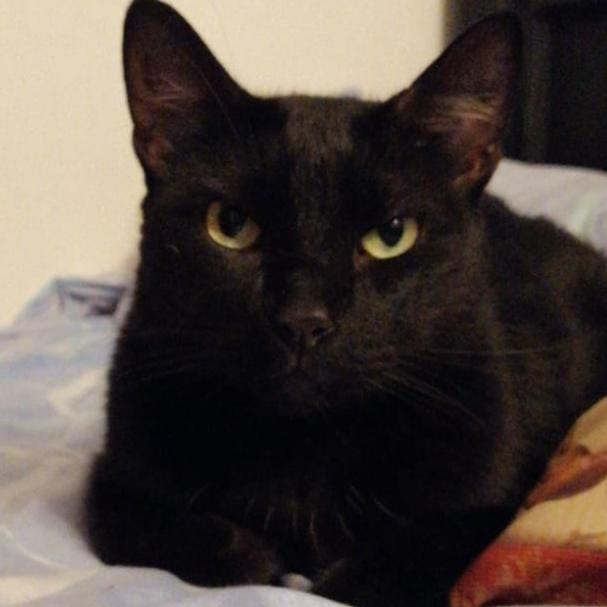

Gato Negro
De naturaleza tímida, por lo general son los últimos en acercarse a las personas nuevas. El contraste de su ojos y pelaje hace que tengan una mirada mucho más expresiva, suelen tener un temperamento amable y cariñoso con sus personas favoritas. Desafortunadamente, son víctimas de leyendas que les ha dado la fama de traer mala suerte, lo que afecta su adopción. Si tienes la oportunidad, lleva un gato negro a casa.